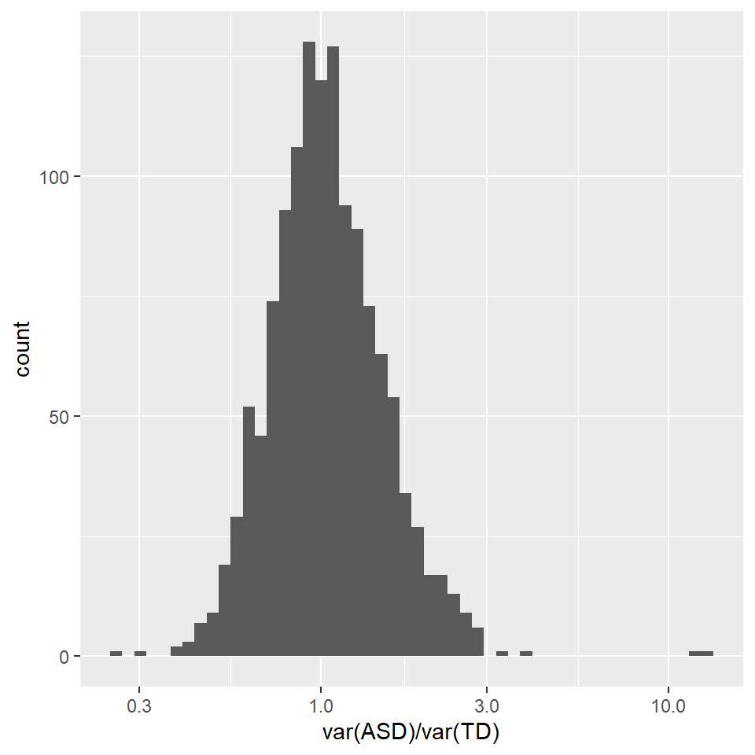
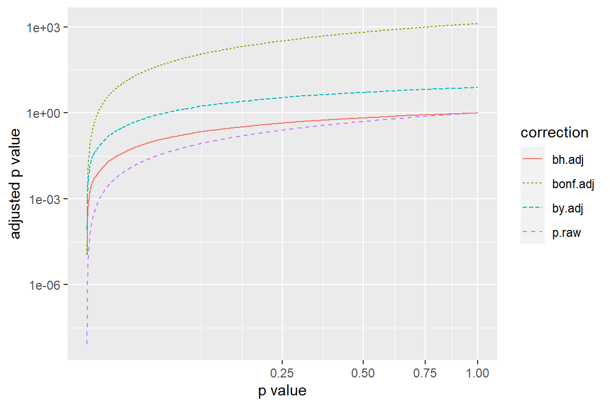
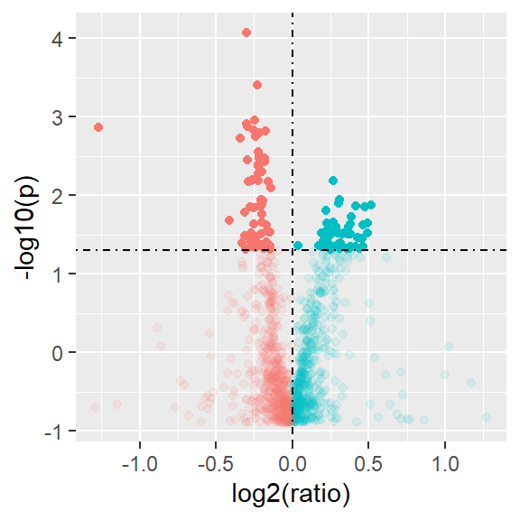

| Attribute | ASD (n = 76) | TD (n = 78) |
|---|---|---|
| Age: mean (SD) years | 5.6 (1.7) | 5.7 (2.0) |
Multiple testing corrections
PSTAT197A/CMPSC190DD Fall 2023
Announcements/reminders
don’t forget to fill out attendance form for each class meeting
- but don’t fill it out if you don’t come to class
first group assignment due Thursday 10/26 11:59pm PST
section attendance is expected
Module introduction
Background
Levels of proteins in plasma/serum are altered in autism spectrum disorder (ASD).
Goal: identify a panel of proteins useful as a blood biomarker for early detection of ASD.
a ‘panel’ is a handful of tests that help distinguish between conditions
so in other words, find proteins whose serum levels are predictive of ASD
Dataset
Data from Hewitson et al. (2021)
Serum samples from 76 boys with ASD and 78 typically developing (TD) boys, 18 months-8 years of age
A total of 1,125 proteins were analyzed from each sample
1,317 measured, 192 failed quality control
(we don’t know which ones failed QC so will use all)
Sample characteristics
| Attribute | ASD (n = 76) | TD (n = 78) |
|---|---|---|
| White/Caucasian | 33 (45.2%) | 40 (51.9%) |
| Hispanic/Latino | 26 (35.6%) | 6 (7.8%) |
| African American/Black | 3 (4.1%) | 14 (18.2%) |
| Asian or Pacific Islander | 2 (2.6%) | 3 (3.9%) |
| Multiple ethnicities or Other | 9 (12.3%) | 14 (18.2%) |
| Not reported | 3 (4.1%) | 1 (1.2%) |
| Attribute | ASD (n = 76) | TD (n = 78) |
|---|---|---|
| None | 38 (52.8%) | 58 (75.3%) |
| ADHD | 2 (2.8%) | 1 (1.3%) |
| Seasonal Allergies | 30 (41.7%) | 17 (22.4%) |
| Asthma | 2 (2.8%) | 0 (0%) |
| Celiac Disease | 1 (1.4%) | 0 (0%) |
| GERD | 1 (1.4%) | 0 (0%) |
| PTSD | 0 (0%) | 1 (1.3%) |
| Sleep Apnea | 2 (2.8%) | 0 (0%) |
| Not reported | 4 (5.6%) | 1 (1.3%) |
| Attribute | ASD (n = 76) | TD (n = 78) |
|---|---|---|
| None | 69 (92%) | 75 (97.4%) |
| Anti-depressant | 2 (2.7%) | 0 (0%) |
| Anti-psychotic | 0 (0%) | 1 (1.3%) |
| Sedative | 1 (1.3%) | 0 (0%) |
| SSRI | 2 (2.27%) | 0 (0%) |
| Stimulant | 1 (1.3%) | 1 (1.3%) |
| Not reported | 1 (1.3%) | 1 (1.3%) |
Data glimpse
# A tibble: 5 × 1,318
group CHIP CEBPB NSE PIAS4 `IL-10 Ra` STAT3 IRF1 `c-Jun` `Mcl-1`
<chr> <dbl> <dbl> <dbl> <dbl> <dbl> <dbl> <dbl> <dbl> <dbl>
1 ASD 0.335 0.520 -0.554 0.650 -0.358 0.305 -0.484 0.309 1.57
2 ASD -0.0715 1.01 3 1.28 -0.133 1.13 0.253 0.408 0.0643
3 ASD -0.406 -0.531 -0.0592 1.13 0.554 -0.334 0.287 -0.845 1.42
4 ASD -0.102 -0.251 1.47 0.0773 -0.705 0.893 2.61 -0.372 -0.467
5 ASD -0.395 -0.536 0.0410 -0.299 -0.830 0.899 1.01 -0.843 -1.15
# ℹ 1,308 more variables: OAS1 <dbl>, `c-Myc` <dbl>, SMAD3 <dbl>, SMAD2 <dbl>,
# `IL-23` <dbl>, PDGFRA <dbl>, `IL-12` <dbl>, STAT1 <dbl>, STAT6 <dbl>,
# LRRK2 <dbl>, Osteocalcin <dbl>, `IL-5` <dbl>, GPDA <dbl>, IgA <dbl>,
# LPPL <dbl>, HEMK2 <dbl>, PDXK <dbl>, TLR4 <dbl>, REG4 <dbl>,
# `HSP 27` <dbl>, `YKL-40` <dbl>, `Alpha enolase` <dbl>, `Apo L1` <dbl>,
# CD38 <dbl>, CD59 <dbl>, FABPL <dbl>, `GDF-11` <dbl>, BTC <dbl>,
# `HIF-1a` <dbl>, S100A6 <dbl>, SECTM1 <dbl>, RSPO3 <dbl>, PSP <dbl>, …# A tibble: 2 × 2
group n
<chr> <int>
1 ASD 76
2 TD 78Module objectives
Methodology
multiple testing
classification: logistic regression; random forests
variable selection: LASSO regularization
classification accuracy measures
Concepts
data partitioning for predictive modeling
model interpretability
high dimensional data \(n < p\)
Multiple testing
Marginal differences
Idea: test for a significant difference in serum levels between groups for a given protein, say protein \(i\).
Notation:
\(\mu^i_{ASD}\): mean serum level of protein \(i\) in the ASD group
\(\mu^i_{TD}\): mean serum level of protein \(i\) in the TD group
\(\delta_i\): difference in means \(\mu^i_{ASD} - \mu^i_{TD}\)
hats indicate sample estimates (e.g. \(\hat{\delta}_i\))
Review: \(t\)-test
The \(t\)-test tests \(H_{0i}: \delta_i = 0\) against its negation \(\neg H_{0i}: \delta_i \neq 0\) using the rule
\[ \text{reject $H_{0i}$ if}\qquad \left|\frac{\hat{\delta}_i}{SE(\hat{\delta}_i)}\right| > t_\alpha \]
- \(SE(\hat{\delta}_i)\) is a standard error for the difference estimate; quantifies variability of the estimate
- procedure controls type I error at \(\alpha\), ensuring \(P\left(\text{reject}_i|H_i\right) \leq 0.05\)
Review: \(p\)-values
The \(p\)-value for a test is the probability of obtaining a sample at least as contrary to \(H_{0i}\) as the sample in hand, assuming \(H_{0i}\) is true.
By construction, \(p < \alpha\) just in case the test rejects with type I error controlled at \(\alpha\).
So a common heuristic is:
\[ \text{reject $H_{0i}$ if} \qquad p_i \leq \alpha \]
One test
Here is R output for one test.
asd %>%
t_test(formula = CHIP ~ group,
order = c('ASD', 'TD'),
alternative = 'two-sided',
var.equal = F)# A tibble: 1 × 7
statistic t_df p_value alternative estimate lower_ci upper_ci
<dbl> <dbl> <dbl> <chr> <dbl> <dbl> <dbl>
1 0.927 75.7 0.357 two.sided 384. -441. 1210.Questions:
- What are the hypotheses in words?
- What are the test assumptions?
- What is the conclusion of the test?
Many tests
A plausible approach for identifying a protein panel, then, is to select all those proteins for which the \(t\)-test indicates a significant difference.
1,317 tests
easy to compute
conceptually straightforward
How likely are mistakes?
Test outcomes
Let \(H_i\) denote the \(i\)th null hypothesis and \(R_i\) denote the event that \(H_i\) is rejected.
| \(H_i\) | \(\neg H_i\) | |
|---|---|---|
| \(R_i\) | \(V\) false rejections | \(S\) correct |
| \(\neg R_i\) | \(T\) correct | \(W\) false non-rejections |
The multiple testing problem is that individual error rates compound over multiple tests.
Familywise error
Familywise error rate (FWER) is the probability of one or more type I errors: \(P(V \geq 1)\).
Suppose there are \(m\) true hypotheses \(\mathcal{H}: \{H_i: i \in C\}\).
If the tests are independent and exact then:
\[ \begin{aligned} P(V \geq 1) &= P\left[ \bigcup_{i \in C} R_i | \mathcal{H} \right] \\ &= 1 - \prod_{i \in C} \left( 1- P(R_i|H_i) \right) \\ &= 1 - (1 - \alpha)^m \end{aligned} \]
FWER Example
If individual tests are exactly controlled at \(\alpha = 0.05\) and independent, at least one error is nearly certain by 100 tests.

Familywise error rate as a function of the number of tests, assuming tests are independent with exact type I error 0.05.
Bonferroni correction
The simplest multiple testing correction is based on the Bonferroni inequality:
\[ P\left[ \bigcup_{i \in C} R_i | \mathcal{H} \right] \leq \sum_{i \in C} P(R_i|\mathcal{H}) \]
If the individual tests are controlled at level \(\alpha\), then \(FWER \leq m\alpha\).
So a simple solution is to test at level \(\alpha^* = \frac{\alpha}{m}\).
In other words, reject if \(p_i < \frac{\alpha}{m}\).
False discovery rate
FWER control will limit false rejections, but at the cost of power; controlling the probability of one type I error is a conservative approach.
More common in modern applications are procedures to control false discovery rate: the expected proportion of rejections that are false.
\[ \text{FDR} = \mathbb{E}\left[\frac{\text{false rejections}}{\text{total rejections}}\right] \]
Conceptually, if say FDR is controlled at \(0.05\), then one would expect 5% of rejections to be false.
Benjamini-Hochberg correction
Benjamini and Hochberg (1995) conceived a procedure based on sorting \(p\)-values.
Supposing \(m\) independent tests are performed:
- Sort the \(p\)-values in increasing order \(p_{(1)}, p_{(2)}, \dots, p_{(m)}\)
- Reject whenever \(p_{(i)} < \frac{i\alpha}{m}\)
They proved that this controls FDR at \(\alpha\).
Benjamini-Yekutieli correction
The Benjamini-Hochberg assumes tests are independent, which is obviously not true in most situations. (Why?)
Benjamini and Yekutieli (2001) modified the correction to hold without the independence assumption:
- Sort the \(p\)-values in increasing order \(p_{(1)}, p_{(2)}, \dots, p_{(m)}\)
- Reject whenever \(p_{(i)} < \frac{i\alpha}{m H_m}\)
Above, \(H_m = \sum_{i = 1}^m \frac{1}{i}\) .
Implementing corrections
The easiest way to implement these corrections is to adjust the \(p\)-values with a multiplier:
- (Bonferroni) \(p^b_i = m\times p_i\)
- (Benjamini-Hochberg) \(p^{bh}_{(i)} = \frac{m}{i} p_{(i)}\)
- (Benjamini-Yekuteili) \(p^{bh}_{(i)} = \frac{m H_m}{i} p_{(i)}\)
Computations
trim_fn <- function(x){
x[x > 3] <- 3
x[x < -3] <- -3
return(x)
}
asd_clean <- asd %>%
select(-ados) %>%
# log transform
mutate(across(.cols = -group, log10)) %>%
# center and scale
mutate(across(.cols = -group, ~ scale(.x)[, 1])) %>%
# trim outliers (affects results??)
mutate(across(.cols = -group, trim_fn))
asd_nested <- asd_clean %>%
pivot_longer(-group,
names_to = 'protein',
values_to = 'level') %>%
nest(data = c(level, group))
asd_nested %>% head(4)# A tibble: 4 × 2
protein data
<chr> <list>
1 CHIP <tibble [154 × 2]>
2 CEBPB <tibble [154 × 2]>
3 NSE <tibble [154 × 2]>
4 PIAS4 <tibble [154 × 2]>
# compute for several groups
test_fn <- function(.df){
t_test(.df,
formula = level ~ group,
order = c('ASD', 'TD'),
alternative = 'two-sided',
var.equal = F)
}
tt_out <- asd_nested %>%
mutate(ttest = map(data, test_fn)) %>%
unnest(ttest) %>%
arrange(p_value)
tt_out %>% head(5)# A tibble: 5 × 9
protein data statistic t_df p_value alternative estimate lower_ci
<chr> <list> <dbl> <dbl> <dbl> <chr> <dbl> <dbl>
1 DERM <tibble> -6.10 151. 8.27e-9 two.sided -0.885 -1.17
2 RELT <tibble> -5.65 152. 7.82e-8 two.sided -0.775 -1.05
3 FSTL1 <tibble> -5.27 152. 4.66e-7 two.sided -0.783 -1.08
4 C1QR1 <tibble> -5.26 152. 4.79e-7 two.sided -0.782 -1.08
5 Calcineurin <tibble> -5.24 151. 5.37e-7 two.sided -0.734 -1.01
# ℹ 1 more variable: upper_ci <dbl># multiple testing corrections
m <- nrow(tt_out)
hm <- log(m) + 1/(2*m) - digamma(1)
tt_corrected <- tt_out %>%
select(data, protein, p_value) %>%
mutate(rank = row_number()) %>%
mutate(p_bh = p_value*m/rank,
p_by = p_value*m*hm/rank,
p_bonf = p_value*m)
tt_corrected %>% head(5)# A tibble: 5 × 7
data protein p_value rank p_bh p_by p_bonf
<list> <chr> <dbl> <int> <dbl> <dbl> <dbl>
1 <tibble [154 × 2]> DERM 0.00000000827 1 0.0000109 0.0000845 1.09e-5
2 <tibble [154 × 2]> RELT 0.0000000782 2 0.0000515 0.000400 1.03e-4
3 <tibble [154 × 2]> FSTL1 0.000000466 3 0.000205 0.00159 6.14e-4
4 <tibble [154 × 2]> C1QR1 0.000000479 4 0.000158 0.00122 6.31e-4
5 <tibble [154 × 2]> Calcineurin 0.000000537 5 0.000141 0.00110 7.07e-4Results

# A tibble: 10 × 2
protein p_by
<chr> <dbl>
1 DERM 0.0000845
2 RELT 0.000400
3 Calcineurin 0.00110
4 C1QR1 0.00122
5 MRC2 0.00132
6 IgD 0.00136
7 CXCL16, soluble 0.00149
8 PTN 0.00154
9 FSTL1 0.00159
10 Cadherin-5 0.00179 Neat graphic: volcano plot
Upregulation and downregulation of serum levels of proteins analyzed – p-values against number of doublings (positive) or halvings (negative) of serum level in ASD group relative to TD group.
Next time
Other approaches to the same problem:
correlation with ADOS (severity diagnostic score)
variable importance in random forest classifier
References
Benjamini, Yoav, and Yosef Hochberg. 1995. “Controlling the False Discovery Rate: A Practical and Powerful Approach to Multiple Testing.” Journal of the Royal Statistical Society: Series B (Methodological) 57 (1): 289–300.
Benjamini, Yoav, and Daniel Yekutieli. 2001. “The Control of the False Discovery Rate in Multiple Testing Under Dependency.” Annals of Statistics, 1165–88.
Hewitson, Laura, Jeremy A Mathews, Morgan Devlin, Claire Schutte, Jeon Lee, and Dwight C German. 2021. “Blood Biomarker Discovery for Autism Spectrum Disorder: A Proteomic Analysis.” PLoS One 16 (2): e0246581.